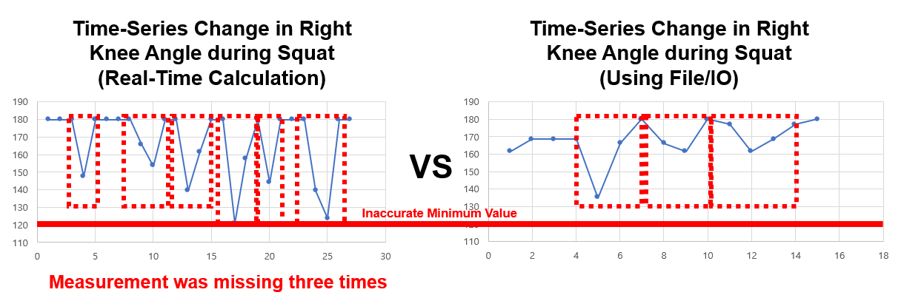

Easy Coach · 2022
Why I started this project
From 2019 to 2022, normal outdoor activities became difficult due to the COVID-19 pandemic. To maintain physical health at home, people needed accessible posture coaching without expensive sensors — so I built Easy Coach: a webcam-only posture coach.
This post expands my 2022 project presentation and includes implementation details and troubleshooting notes.
What Easy Coach can do

Easy Coach offers simple, fast, and precise posture feedback. Users select an exercise and perform it in front of a laptop camera — the system returns real-time coaching based on extracted joint angles.
Main Coaching Algorithms
Overview
What data should be collected?
- Squats
- Push-ups
- Lunges
- Shoulder Press
- Overhead Tricep Extensions
These home workouts require monitoring of joint angles and identification of repeated movement phases. We use extrema in joint-angle vs time graphs (from OpenPose keypoints) to find phases, measure repetition counts, and compute movement speed.
What is OpenPose and how to calculate angles?
OpenPose outputs 2D coordinates of keypoints. By choosing three joints we form a triangle and compute side lengths; using the law of cosines we obtain joint angles (range 0 to π), which are robust for further processing.
Calculating maximum and minimum angles
Recording and storing per-frame angles caused memory overhead and slow IO. The practical solution was to compute representative statistics online: detect local maxima/minima in-stream and aggregate only those values (constant time per frame), preventing memory and IO bottlenecks.
Local extrema detection relies on sign changes of the derivative of angle-time signals — a light-weight, real-time-friendly approach.
Movement identification algorithm
Repetitive exercises show repeating extremum patterns (e.g., knee angle during squats). By tracking derivative sign patterns and aligning extrema, we determine current movement phase, repetition index, and decide when to stop recording.
Algorithms for More Accurate Coaching
Causes of coaching inaccuracies
During beta testing, OpenPose misdetections occurred mostly because of occlusions or moving background objects. Typical causes:
- Another person or moving object behind the user
- Partial occlusion of body parts by furniture or objects

Discarding & correcting inaccurate measurements
OpenPose uses -1 to indicate missing values — those are discarded. The harder case is when an obstacle is mistaken for a body part and generates a plausible angle (within 0–180°). To detect and correct such errors, Easy Coach uses:
- Criterion 1: If an angle is below an exercise-specific physical lower bound, mark frame as erroneous.
- Criterion 2: If the angular change between consecutive frames exceeds a plausible physical threshold (derivative-based), mark it as erroneous.
When erroneous frames are detected, the angle is replaced by the average of previous valid observations, smoothing the signal and improving coaching reliability.
Feedback from Specialists
Presentation feedback from industry and academia emphasized two main points:
- UI/UX importance — add gamification and engagement features to retain users.
- Prior art research — investigate existing solutions to refine differentiation and product strategy.
These insights guided subsequent UI improvements and the roadmap toward a productized solution.
Technical notes
| Component | Details |
|---|---|
| Pose estimation | OpenPose-based 2D keypoint extraction (15 joints) |
| Angle calc | Form triangles — law of cosines to compute joint angles |
| Realtime | Online extrema detection + streaming aggregation |
| Error handling | Value thresholds + derivative checks + fallback averaging |
Images & Flow